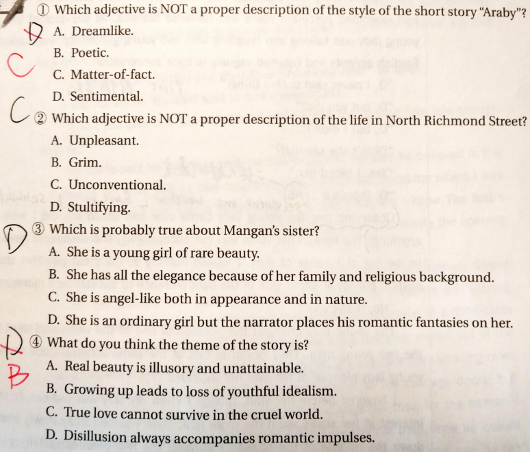

7.Araby¶
课本页数: 138 作者: James Joyce
https://www.plato-philosophy.org/wp-content/uploads/2016/05/Araby.pdf
翻译在这里：https://www.douban.com/note/149886900
里士满北街是条死胡同，很寂静，只有基督教兄弟学校的男生们放学的时候除外。一幢无人居住的两层楼房矗立在街道封死的那头，避开邻近的房子，独占一方。街上的其他房子意识到各自房中人们的体面生活，便彼此凝视着，个个是一副冷静沉着的棕色面孔。
我们家原先的房客是个司铎，他死在后屋的起居室里。封闭得太久，空气变得又闷又潮，滞留在所有的房间里，厨房后面废弃的房间满地狼藉，都是写无用的旧纸张。我在里面发现了几本平装书，书页已经卷了边，潮乎乎的：沃尔特?司各特的《修道院院长》，《虔诚的教友》，还有《维多契回忆录》。我最喜欢最后一本，因为它的纸是黄色的。房子后面有荒园子，中间栽种了苹果树，还有些胡乱蔓生的灌木，在一丛灌木下，我找到了司铎留下的锈迹斑斑的自行车气筒。他是个很有善心的司铎；他在遗嘱里把钱全留给了教会组织，把他房里的家具全留给了他妹妹。
冬季白天变短了，我们还有吃晚饭，黄昏就降临了。我们在街上碰面时，房子显得很肃穆。我们头上那块天空总是不断变换着紫罗兰色，街灯朝着那片天空举起微弱的灯火。凛冽的空气刺痛了我们，我们嬉闹着，后来全身就热乎乎的了。我们的叫喊声在寂然的街道上回荡。沿着游戏的路线，我们先要穿过房子后面黑暗泥泞的胡同，在那里会同破烂屋棚那边来的野孩子交手，然后到黑乎乎湿漉漉的园子后面，园子里的灰坑冒出刺鼻的异味，最后到达阴暗的臭烘烘的马厩，马夫抚弄梳理着马毛，或是摇动着紧扣的马具丁冬作响。我们回到街上的时候，厨房窗里透出的灯光已经撒满街区。倘若瞧见我叔父正从街角走来，我们就躲在阴影里，看他走进宅子才算平安无事。或者曼根的姐姐出来到门阶上，叫她弟弟回屋吃晚茶，我们就从阴影处看着她沿街东瞅西瞅。我们会等一会儿，看她是否留在那里还是进屋去，如果她留在那儿，我们就离开藏身的黑影，垂头丧气地走上曼根家的门阶。她在等我们，门半开着，透出灯光，勾勒出她的身材。她动身子的时候裙子会摆来摆去，柔软的发梢甩到这边有甩到那边。
每天早晨我都躺在前厅的地板上看她的房门。百叶窗拉下来，离窗格只有不到一英寸的空隙，别人不见我。当她出来走到台阶上，我的心就欢跳起来。我跑到客厅，抓过自己的书本就跟到她身后。我总让自己眼中有她棕褐的背影，快走到我们得分开的地方时，我便加快步伐超过她。一个又一个的早晨，都是这样的。我除了几句日常客气话，再没有对她说过什么，可她的名字却像一声传唤，会调动我全身的血液喷发愚蠢的激情。
就算在最不适合想入非非的地方，她的形象也伴随着我。每逢星期六傍晚，我的婶婶去市场的时候，我得去帮着提包裹。我们在花哨热闹的街上穿来走去，被醉汉和讨价还价的女人们挤撞着，四周是工人们的咒骂声，店铺伙计守在成桶的猪颊肉旁尖着嗓子吆喝，街头卖唱的用鼻音哼唱着，唱的是关于奥多若万?罗萨的一首《大家都来吧》的曲子，或者是一首关于我们的祖国如何多灾多难的歌谣。这些闹声汇集成我对生活的唯一感受：我想象中，自己正捧着圣杯在一大群仇敌中安然走过。我做着古怪的祈祷和赞美，她的名字常常冲口而出，我自己也不明白这些祈祷和赞美。我的双眼常常热泪盈眶（我却不知道为何如此），有时候一阵狂潮从心底喷涌而出，像是要充溢我的胸膛。我很少想到将来。我不知道究竟会不会跟她讲话，也不知道当真讲话了，又能怎样告诉她我这茫然的迷恋。但我的躯体就像一架竖琴，她的一言一笑、一举手一投足就像在琴弦上划过的手指。
有天晚上我走进了后屋司铎去世的那间起居室。那晚上夜色很黑，下着雨，房子里既然无声。透过一扇窗户，我听见雨水砸在地面上，细密而连续不断的水像针尖一样在浸润透了的土床上戏耍。远处某盏灯或亮着灯火的窗户在我下面闪动。我很感激我几乎看不到什么。我所有的知觉好像都渴望把自己遮掩起来，我感到我所有的知觉都快要溜掉了，就紧紧合起双掌，两只手都颤抖了，我喃喃地说：哦，爱！哦，爱！说了好多次。
她终于对我说话了。她向我开口讲最初几个字时，我茫然得都不知怎么回答她才好。她问我可是要去阿拉比。我忘了自己当时说的是去还是不去。她说，那可是个很棒的集市；她真想去啊。
——那你为什么不能去呢？
她说话的时候，一圈又一圈地转动着手腕上的一个银手链。她说，她去不了，她那个星期要在修道院静修。她的弟弟和另外两个男孩子正在抢帽子，我独自靠在门栏边。她握住一根栏杆的尖头，朝我低下头。我们房门对面的路灯映照出她脖颈白皙的曲线，照亮了垂落在脖子上的秀发，又落下来，照亮了她搁在栏杆上的手。灯光洒落在她裙子的一边，正照在衬裙的白色镶边上，她叉开腿站在那里的时候刚好瞧得见。
——你倒是走运啊，她说。
——要是我去的话，我说，我给你带回点好东西。
那个傍晚之后，数不清的蠢念头便占据了我的思维，糟蹋了我多少的日思夜想！我巴望着能抹掉中间那写单调无聊的日子。我焦躁地应付着学校的功课。深夜在卧房中，白天在教室里，她的形象都会来到我和我拼命想要读下去的书页之间。我的灵魂在静默中感受到巨大的快感，阿拉比这个词的每个音节都通过静默在我周围回荡着，把一种东方的魔力施加在我全身上下。我请求在星期六晚上得空到集市上走一趟。婶婶吃了一惊，说希望那不是什么共济会的玩意。我在课堂上几乎回答不了什么问题。我望着老师的脸色从温和转为严厉；他希望我不要荒废时光。我没办法把散乱的思绪集中起来。我几乎没有耐心来严肃地生活，既然这正儿八经的生活挡在我和我的愿望之间，那在我看来它就好像是儿戏，丑陋单调的儿戏。
到了星期六的早晨，我提醒叔父，我很盼望能在傍晚到集市去。他正翻弄着衣帽架找自己的帽子，就短促地回答我说：
——行啦，孩子，我知道啦。
他在大厅里，我就不能去前厅躺在窗下。我心情很糟地离开宅子，慢吞吞朝学校走去。空气凛冽湿冷，我心中已然不安起来。
我回家吃晚饭的时候，叔父还没有回来。时候还早。我坐在那里，呆呆地瞪着时钟，过了一会儿，滴答声开始令我烦躁，我就离开了那房间。我爬上楼梯，走到房子的上半截。那些房间又高又冷，空荡荡阴惨惨的，却放松了我的心情，我唱着歌一间屋一间屋地串着。我从前窗望去，看到伙伴们正在下面的街上玩。他们的叫喊声传到我这里时又微弱又不清楚，我把头抵在凉丝丝的玻璃上，遥望着她居住的那所昏暗的宅院。我在那里可能站了有一个小时，我什么都看不到，满眼全是我想象中刻画的那个身着褐衫的身影，灯光小心翼翼地触摸着那弯弯的脖颈，那搁在栏杆上的手，还有那裙服下的镶边。
再下楼时，我发现默瑟太太坐在炉火边。她是个唠唠叨叨的老太太，当铺老板的寡妇，为了很虔诚的目的收集些用过的邮票。我不得不忍受着茶桌上的东家长西家短。饭拖拖拉拉吃了一个多小时，叔父却还没回来。默瑟太太起身要走：她很遗憾不能再等了，已经过了八点钟，她不愿意在外面呆得很晚，因为晚上的空气对她有害。她走了后，我开始在屋里走来走去，紧握着拳头。婶婶说：
——恐怕这个礼拜六晚上你去不了集市了。
九点钟时我听到叔父用弹簧钥匙开门厅。我听到他自言自语，听到他把外套搭在衣帽架上，衣帽架摇晃的声音。我很明白这些迹象。他晚饭吃到一半，我就求他给我钱好去集市。他全忘了。
——这时候了，人们在床上都睡醒了头一觉啦，他说。
我没有笑。婶婶很激动地对他说：
——你就不能给他钱让他去吗？事实上你耽搁得他已经够迟的啦。
叔父说他很抱歉自己全忘了。他说他很相信那句老话：只工作不玩耍，聪明孩子也变傻。他问我想去哪里，我又跟他说了一回，他便问我是否知道那首《阿拉伯人告别坐骑》。我走出厨房的时候，他正要给婶婶背诵开篇的几句诗行。
我紧紧攥着一个佛罗林，大步沿着白金汉大街朝车站走去。看见条条大街上熙熙攘攘的购物者和耀眼闪亮的汽灯，我想起了这次旅行的目的。我登上一辆乘客稀少的列车，在三等车厢的座位上坐下。列车好一会儿都没有开动，真叫人受不了，然后列车缓缓驶出车站。它向前爬行，经过了破烂废弃的房屋，又跨过了波光粼粼的大河。在韦斯特兰?罗车站，人群拥向车厢门口；可是乘务员却让他们退后，说这是去集市的专列。空寥的车厢里，我始终是独自一人。几分钟后，列车在临时搭建的木质月台前缓缓停下。我走出车厢来到路上，看到亮着灯的大钟盘上已经是差十分钟十点了。我的前面是一幢巨大的建筑物，上面显示着那个具有魔力的名字。
我找不到票价是六便士的入口，又担心集市快要散了，就快步从一个旋转栅门进去了，把1先令递给一个满面倦色的人。我发觉自己进了一间大厅，厅内半高处有一圈楼廊。几乎所有的摊位都收摊了，厅里大部分地方都在昏暗中。我意识到一种静默，就像礼拜结束后教堂里充溢的那种静默。我怯怯地走到集市中间。有几个人聚在仍然在营业的那些摊位前。有个挂帘上用彩灯勾出了CafeChantant的字样，两个男人正在帘前数着托盘上的钱。我听着硬币掉落的声音。
我勉强记起了自己为什么到这儿来，便朝一间摊位走过去，细细地瞧着陶瓷花瓶和雕花的茶具。摊位门口有位年轻女士在跟两位年轻绅士说笑。我留心到他们有英格兰口音，就含含混混地听他们谈话。
——哦，我从没说过那样的话！
——哦，可是你说过的啊！
——哦，可是我就是没有说过！
——她难道不是说过的吗？
——说过的。我听她说过。
——哦，这是……瞎说！
年轻女士看到我，便走过来问我可想要买点东西。她的语调并不很殷勤；好像就是为了尽义务才对我说话。我谦卑地看着在摊位昏暗的入口处像东方卫士一样挺立两边的大罐子，咕哝着说：
——不，谢谢。
年轻女士挪动了一个花瓶的位置，又回到两个年轻男人那里。他们又谈起了同一个话题。年轻女士回头斜眼瞧了我一两回。
尽管我明白自己滞留不去也无济于事，却在她的摊位前流连着，想让我对她那些瓶瓶罐罐的兴趣看上去更像回事。然后我慢慢转身离去，朝里走到集市的中间。我让两个便士在口袋里跟六便士的硬币撞击着。我听到楼廊一头有个声音在喊要灭灯了。大厅的上层现在全黑了。
我抬头凝视着黑暗，发觉自己是受虚荣驱动又受虚荣愚弄的可怜虫；我的双眼中燃烧着痛苦和愤怒。
曾经的考题¶
曾经考过的选择题：Araby 会考象征这个手法，问你以下选项哪个不是用了象征手法，课上 ppt 会给出哪些物品是象征，记住就行。
Symbols
What do these things symbolize?
- the neighborhood
- the priest
- the girl, Mangan’s sister
- the chalice (圣杯)
- Araby
【故事梗概】 故事以第一人称叙述。主人公是一位少年，和姑姑、叔叔住在一起。他们家原来住着的一位教士死了，留下了一些书。少年在那些书中找到自己喜欢的东西。
冬日里，少年常常在匆匆吃完晚饭后就和小伙伴们到街上玩耍。同伴曼根住在附近，少年爱上了曼根的姐姐。他每天早上躺在前厅的地板上盯着她家的门看，只要姑娘出现在台阶上，少年的心就会怦怦直跳，此时他会抓起一本书，紧跟在她后面，天天如此。但除了随意打声招呼外，从未与她说过话，但姑娘的身影无时不在他眼前出现。有时在做祷告或唱赞美诗时，姑娘的名字也会莫名其妙地从他嘴里脱口而出。
一天晚上，姑娘终于与少年相见了。姑娘说他应该去阿拉比集市看看。慌乱不堪的少年此时却不知说什么好，只是说他若去的话，一定帮她买点东西。从那晚起，少年整天神思恍惚，脑海里出现了许多怪念头。无论白天在教室里还是晚上在卧室里，姑娘的身影总是伴随着他。
生活中的正常活动使他厌倦，就连学校的功课也使他感到乏味。课堂上他很少回答问题，整天盼望着去阿拉比的日子早点到来。
一个周六的早晨，少年告诉叔叔自己晚上要去阿拉比集市，可那天叔叔直到晚上九点才回来。叔叔晚饭还未吃完，少年提出要点钱去阿拉比。少年攥着一枚两先令的银币往火车站赶去，他独自一人坐在一节车厢里，觉得火车简直是在爬行。待他赶到阿拉比市场时已是九点五十分了。他匆匆忙忙付了钱，进入了一个大厅，但此时半个大厅已是漆黑一片，他有一种孤独感，仿佛置身于做完礼拜后的教堂中，商场中间还有几个柜台在营业。少年随便走到一个摊位前，转悠了一会，发现自己什么也买不起。又过了一会，传来了熄灯的喊叫声，少年觉得自己真是一个可怜虫，只好带着痛苦和愤怒怏怏不乐地离开。
【教师点评】
这是个美妙纯真的梦想如何走向幻灭的故事。其中充满了一系列难以索解的象征性意象，经过不少乔伊斯专家的研究，这些意象反而变得更加没有了确解。我们不妨直接将其当作一个爱情故事来读，这样，常人在青春期所曾有过的美好情愫，反倒能引领我们进入小主人公梦幻中的阿拉比集市般的爱情殿堂。不过，离那梦幻之地越近，爱情的浪漫反而会离人们越远。梦想与现实的极大反差，或许正是这篇小说的一个主题。人生难免的幻灭感，即使在美好的爱情中也不时地会有所表现。
然而，至少从表面上看，作品还是形象细致地描写了少年对爱情的渴望以及内心的彷徨和孤独。其中，少年那忐忑的恋爱心理，写得入木三分。“我想象自己端着圣杯从一群敌人中安全通过。”少年的这句话恰到好处地表达了自己当时的内心感受，他将内心对曼根姐姐的爱比作圣杯，而周围的人对他却毫不了解，毫不同情，犹如敌人一般。这样看来，这个短篇的主要艺术手法，仍然是现实主义的。
【张佳秋上课的讲解】
what is a symbol? 他从课本133页（文学知识）开始讲
A symbol is a person or an object that, in addition to its literal meaning, suggests something more abstract or complex.
literal meaning: meaning on the surface
a symbol is something concrete in the real world(we can see/touch in the physical world)
symbolism (literature) Symbolism (arts)
an example: A Piece of Yellow Soap
象征主义是19世纪末在法国及西方几个国家出现的"一种艺术思潮。当时欧洲一部分知识分子不愿直接表述自己的意思，往往采用象征和暗示的手法，在幻想中构成另外的世界，并发表自己的感想，这种便产生了近代象征主义。
象征派主张强调主观、个性、以点之纲避免迫某种带有暗示和象征性的事物画面，他们不再把一时所见真实的表现出来，而通过特定形象的综合来表达自己的一种观点和内在的精神世界。在形式上则追求华丽的辞藻和绮焕的效果。
象征主义主要从为绘画主张摆脱自然的束缚，而不是视觉的印象的再现。因此，他们反对印象主义的色光处理，而致力于表现现实世界中根本不存在的怪怪怪异和幻觉形象。
象征主义主张绘画可以用色彩、光怪陆离、深沉而又绮焕的，带有装饰美的色调不同自然中的色调利用，绘画的画面应该具有想象和梦幻的能获得。
意识流小说Stream of consciousness is the continuous flow of sense, perceptions, thoughts, feelings, and memories in the human mind or a literary method of representing a blending of mental processes in fictional characters, usually in an unpunctuated or disjointed form of interior monologue.
In stream of consciousness, an author portrays a character’s continuing “stream” of thoughts as they occur, regardless of whether they make sense or whether the next thought in a sequence relates to the previous thought. These thought portrayals expose a character’s memories, fantasies, apprehensions, fixations, ambitions, rational and irrational ideas, and so on.
看到前几段之后的想法：
- Geographical setting: Dublin, Ireland
- Cultural setting: a life of stagnation, the cultural and moral decay, repressive Dublin culture
- How does the setting influence boy’s life and psychology?
one theme of the story: Everyone has his own dreams, dreams are usually very beautiful, they support a person’s spiritual world. However, after going after a dream for a long time, a person may suddenly find that his dreams are unreal, they can never become the reality, they are only fantasies. Then the spiritual world may collapse, and he feels lost and doesn't know what to do.
Symbols
What do these things symbolize?
- the neighborhood
- the priest
- the girl, Mangan’s sister
- the chalice (圣杯)
- Araby
张佳秋在念完这个单元之后快速地去过了一下第八单元的文学知识（他说词组补考，但是文学知识还是需要看）：Romanticism
正文¶
North Richmond Street, being blind, was a quiet street except at the hour when the Christian Brothers' School set the boys free. An uninhabited house of two storeys stood at the blind end, detached from its neighbours in a square ground. The other houses of the street, conscious of decent lives within them, gazed at one another with brown imperturbable faces.
里士满北街是条死胡同，很寂静，只有基督教兄弟学校的男生们放学的时候除外。一幢无人居住的两层楼房矗立在街道封死的那头，避开邻近的房子，独占一方。街上的其他房子意识到各自房中人们的体面生活，便彼此凝视着，个个是一副冷静沉着的棕色面孔。
(the place of the story --- North Richmond Street an uninhabited house of two stories our house --- the priest What’s the use of the description of the deceased priest? Joyce employs the sense of smell, of hearing, of sight to present the setting vividly. The description reveals the dreary, dark, lifeless, stagnant Dublin life, esp. the spiritual life.)
The former tenant of our house, a priest, had died in the back drawing-room. Air, musty from having been long enclosed, hung in all the rooms, and the waste room behind the kitchen was littered with old useless papers. Among these I found a few paper-covered books, the pages of which were curled and damp: The Abbot, by Walter Scott, The Devout Communicant, and The Memoirs of Vidocq. I liked the last best because its leaves were yellow. The wild garden behind the house contained a central apple-tree and a few straggling bushes, under one of which I found the late tenant's rusty bicycle-pump. He had been a very charitable priest; in his will he had left all his money to institutions and the furniture of his house to his sister.
我们家原先的房客是个司铎，他死在后屋的起居室里。封闭得太久，空气变得又闷又潮，滞留在所有的房间里，厨房后面废弃的房间满地狼藉，都是写无用的旧纸张。我在里面发现了几本平装书，书页已经卷了边，潮乎乎的：沃尔特?司各特的《修道院院长》，《虔诚的教友》，还有《维多契回忆录》。我最喜欢最后一本，因为它的纸是黄色的。房子后面有荒园子，中间栽种了苹果树，还有些胡乱蔓生的灌木，在一丛灌木下，我找到了司铎留下的锈迹斑斑的自行车气筒。他是个很有善心的司铎；他在遗嘱里把钱全留给了教会组织，把他房里的家具全留给了他妹妹。(the description of our house)
When the short days of winter came, dusk fell before we had well eaten our dinners. When we met in the street the houses had grown sombre. The space of sky above us was the colour of ever-changing violet and towards it the lamps of the street lifted their feeble lanterns. The cold air stung us and we played till our bodies glowed. Our shouts echoed in the silent street. The career of our play brought us through the dark muddy lanes behind the houses, where we ran the gauntlet of the rough tribes from the cottages, to the back doors of the dark dripping gardens where odours arose from the ashpits, to the dark odorous stables where a coachman smoothed and combed the horse or shook music from the buckled harness. When we returned to the street, light from the kitchen windows had filled the areas. If my uncle was seen turning the corner, we hid in the shadow until we had seen him safely housed. Or if Mangan's sister came out on the doorstep to call her brother in to his tea, we watched her from our shadow peer up and down the street. We waited to see whether she would remain or go in and, if she remained, we left our shadow and walked up to Mangan's steps resignedly. She was waiting for us, her figure defined by the light from the half-opened door. Her brother always teased her before he obeyed, and I stood by the railings looking at her. Her dress swung as she moved her body, and the soft rope of her hair tossed from side to side.
冬季白天变短了，我们还有吃晚饭，黄昏就降临了。我们在街上碰面时，房子显得很肃穆。我们头上那块天空总是不断变换着紫罗兰色，街灯朝着那片天空举起微弱的灯火。凛冽的空气刺痛了我们，我们嬉闹着，后来全身就热乎乎的了。我们的叫喊声在寂然的街道上回荡。沿着游戏的路线，我们先要穿过房子后面黑暗泥泞的胡同，在那里会同破烂屋棚那边来的野孩子交手，然后到黑乎乎湿漉漉的园子后面，园子里的灰坑冒出刺鼻的异味，最后到达阴暗的臭烘烘的马厩，马夫抚弄梳理着马毛，或是摇动着紧扣的马具丁冬作响。我们回到街上的时候，厨房窗里透出的灯光已经撒满街区。倘若瞧见我叔父正从街角走来，我们就躲在阴影里，看他走进宅子才算平安无事。或者曼根的姐姐出来到门阶上，叫她弟弟回屋吃晚茶，我们就从阴影处看着她沿街东瞅西瞅。我们会等一会儿，看她是否留在那里还是进屋去，如果她留在那儿，我们就离开藏身的黑影，垂头丧气地走上曼根家的门阶。她在等我们，门半开着，透出灯光，勾勒出她的身材。她动身子的时候裙子会摆来摆去，柔软的发梢甩到这边有甩到那边。 （We played on the street and in the lanes in the dusk when winter came, we watched Mangan’s sister in the shadow when she called her brother, and she looked beautiful.）
（The story is about an adolescent love, or something we call “puppy love”, which is not taken seriously by adults.
In the mind of the narrator, the girl appears to be a symbol of beauty, romance and idealism against the bleakness of his day-to-day life.）
前三段的单词：
- uninhabited 无人居住的
- detached from 孤零零的
- a dead priest 过世的教士
- musty, damp 霉味的，潮湿的
- the waste room, old useless papers
- rusty 生锈的
- sombre 忧郁的，阴沉的
- feeble lanterns 衰弱的路灯; the cold air 寒冷的天气
- the dark muddy lanes 黑暗泥泞的巷子
- odorous stables 有味道的马厩
Every morning I lay on the floor in the front parlour watching her door. The blind was pulled down to within an inch of the sash so that I could not be seen. When she came out on the doorstep my heart leaped. I ran to the hall, seized my books and followed her. I kept her brown figure always in my eye and, when we came near the point at which our ways diverged, I quickened my pace and passed her. This happened morning after morning. I had never spoken to her, except for a few casual words, and yet her name was like a summons to all my foolish blood.
每天早晨我都躺在前厅的地板上看她的房门。百叶窗拉下来，离窗格只有不到一英寸的空隙，别人不见我。当她出来走到台阶上，我的心就欢跳起来。我跑到客厅，抓过自己的书本就跟到她身后。我总让自己眼中有她棕褐的背影，快走到我们得分开的地方时，我便加快步伐超过她。一个又一个的早晨，都是这样的。我除了几句日常客气话，再没有对她说过什么，可她的名字却像一声传唤，会调动我全身的血液喷发愚蠢的激情。（"I peeped Mangan’s sister from behind the window, and I tried to talk to her." "Everyday I was fascinated by her, I followed her and passed her in the morning, trying to speak to her."）
Her image accompanied me even in places the most hostile to romance. On Saturday evenings when my aunt went marketing I had to go to carry some of the parcels. We walked through the flaring streets, jostled by drunken men and bargaining women, amid the curses of labourers, the shrill litanies of shop-boys who stood on guard by the barrels of pigs' cheeks, the nasal chanting of street-singers, who sang a come-all-you about O'Donovan Rossa, or a ballad about the troubles in our native land. These noises converged in a single sensation of life for me: I imagined that I bore my chalice safely through a throng of foes. Her name sprang to my lips at moments in strange prayers and praises which I myself did not understand. My eyes were often full of tears (I could not tell why) and at times a flood from my heart seemed to pour itself out into my bosom. I thought little of the future. I did not know whether I would ever speak to her or not or, if I spoke to her, how I could tell her of my confused adoration. But my body was like a harp and her words and gestures were like fingers running upon the wires.
就算在最不适合想入非非的地方，她的形象也伴随着我。每逢星期六傍晚，我的婶婶去市场的时候，我得去帮着提包裹。我们在花哨热闹的街上穿来走去，被醉汉和讨价还价的女人们挤撞着，四周是工人们的咒骂声，店铺伙计守在成桶的猪颊肉旁尖着嗓子吆喝，街头卖唱的用鼻音哼唱着，唱的是关于奥多若万?罗萨的一首《大家都来吧》的曲子，或者是一首关于我们的祖国如何多灾多难的歌谣。这些闹声汇集成我对生活的唯一感受：我想象中，自己正捧着圣杯在一大群仇敌中安然走过。我做着古怪的祈祷和赞美，她的名字常常冲口而出，我自己也不明白这些祈祷和赞美。我的双眼常常热泪盈眶（我却不知道为何如此），有时候一阵狂潮从心底喷涌而出，像是要充溢我的胸膛。我很少想到将来。我不知道究竟会不会跟她讲话，也不知道当真讲话了，又能怎样告诉她我这茫然的迷恋。但我的躯体就像一架竖琴，她的一言一笑、一举手一投足就像在琴弦上划过的手指。 （Vivid Descriptions：
the market; the flaring streets; drunken men; bargaining women; curses of laborers; shop boys, barrels of pig’s cheeks; street singers）
("Even in some places (going marketing with my aunt on Saturday evenings) the most hostile to romance, her name got into my head and sprang to my lips, I could not refrain from thinking about her." "I bore my chalice safely through a throng of foes." "Chalice is a symbol, what is it?”)
One evening I went into the back drawing-room in which the priest had died. It was a dark rainy evening and there was no sound in the house. Through one of the broken panes I heard the rain impinge upon the earth, the fine incessant needles of water playing in the sodden beds. Some distant lamp or lighted window gleamed below me. I was thankful that I could see so little. All my senses seemed to desire to veil themselves and, feeling that I was about to slip from them, I pressed the palms of my hands together until they trembled, murmuring: 'O love! O love!' many times.
有天晚上我走进了后屋司铎去世的那间起居室。那晚上夜色很黑，下着雨，房子里既然无声。透过一扇窗户，我听见雨水砸在地面上，细密而连续不断的水像针尖一样在浸润透了的土床上戏耍。远处某盏灯或亮着灯火的窗户在我下面闪动。我很感激我几乎看不到什么。我所有的知觉好像都渴望把自己遮掩起来，我感到我所有的知觉都快要溜掉了，就紧紧合起双掌，两只手都颤抖了，我喃喃地说：哦，爱！哦，爱！说了好多次。
- "I went into the back drawing-room, wanted to shut myself from the outside world. She was always on my mind, I seemed to be out of my mind because of the girl, so ridiculous!"
- "Please pay attention to the surrounding: the back drawing-room in which the priest had died; a dark rainy evening."
At last she spoke to me. When she addressed the first words to me I was so confused that I did not know what to answer. She asked me was I going to Araby. I forgot whether I answered yes or no. It would be a splendid bazaar; she said she would love to go.
'And why can't you?' I asked.
她终于对我说话了。她向我开口讲最初几个字时，我茫然得都不知怎么回答她才好。她问我可是要去阿拉比。我忘了自己当时说的是去还是不去。她说，那可是个很棒的集市；她真想去啊。
——那你为什么不能去呢？
While she spoke she turned a silver bracelet round and round her wrist. She could not go, she said, because there would be a retreat that week in her convent. Her brother and two other boys were fighting for their caps, and I was alone at the railings. She held one of the spikes, bowing her head towards me. The light from the lamp opposite our door caught the white curve of her neck, lit up her hair that rested there and, falling, lit up the hand upon the railing. It fell over one side of her dress and caught the white border of a petticoat, just visible as she stood at ease.
'It's well for you,' she said.
'If I go,' I said, 'I will bring you something.'
她说话的时候，一圈又一圈地转动着手腕上的一个银手链。她说，她去不了，她那个星期要在修道院静修。她的弟弟和另外两个男孩子正在抢帽子，我独自靠在门栏边。她握住一根栏杆的尖头，朝我低下头。我们房门对面的路灯映照出她脖颈白皙的曲线，照亮了垂落在脖子上的秀发，又落下来，照亮了她搁在栏杆上的手。灯光洒落在她裙子的一边，正照在衬裙的白色镶边上，她叉开腿站在那里的时候刚好瞧得见。
——你倒是走运啊，她说。
——要是我去的话，我说，我给你带回点好东西。
（7-11段：At last she spoke to me, she suggested me going to Araby）
Araby is more than a fair/bazaar, but an object, just like the girl, that bears lots of imagination and hope of the boy. e.g. The syllables of the word Araby were called to me through the silence in which my soul luxuriated and cast an Eastern enchantment over me. It suggests that Araby is an ideal, perfect place, a wondrous evocation of the West’s idealized and romanticized notions of the Middle East. 这个集市的名称具有阿拉伯的异域风情和东方世界的无限魅力。象征了主人公探索与追求的目标，也是他为自己构筑的一个理想境界。"
What innumerable follies laid waste my waking and sleeping thoughts after that evening! I wished to annihilate the tedious intervening days. I chafed against the work of school. At night in my bedroom and by day in the classroom her image came between me and the page I strove to read. The syllables of the word Araby were called to me through the silence in which my soul luxuriated and cast an Eastern enchantment over me. I asked for leave to go to the bazaar on Saturday night. My aunt was surprised, and hoped it was not some Freemason affair. I answered few questions in class. I watched my master's face pass from amiability to sternness; he hoped I was not beginning to idle. I could not call my wandering thoughts together. I had hardly any patience with the serious work of life which, now that it stood between me and my desire, seemed to me child's play, ugly monotonous child's play.
那个傍晚之后，数不清的蠢念头便占据了我的思维，糟蹋了我多少的日思夜想！我巴望着能抹掉中间那写单调无聊的日子。我焦躁地应付着学校的功课。深夜在卧房中，白天在教室里，她的形象都会来到我和我拼命想要读下去的书页之间。我的灵魂在静默中感受到巨大的快感，阿拉比这个词的每个音节都通过静默在我周围回荡着，把一种东方的魔力施加在我全身上下。我请求在星期六晚上得空到集市上走一趟。婶婶吃了一惊，说希望那不是什么共济会的玩意。我在课堂上几乎回答不了什么问题。我望着老师的脸色从温和转为严厉；他希望我不要荒废时光。我没办法把散乱的思绪集中起来。我几乎没有耐心来严肃地生活，既然这正儿八经的生活挡在我和我的愿望之间，那在我看来它就好像是儿戏，丑陋单调的儿戏。(I waited eagerly for the Saturday night after that evening, I could not concentrate on anything I did, I was absent-minded in my study. My teacher was angry with me.)
Did the boy live together with his parents?
- The narrator, who remains unnamed throughout the story, lives with his aunt and uncle, who appear to be insensitive to the boy's feelings.
- 他并非和父母住在一起。从这些朴实的文字中，作者不仅很自然的使读者了解到男孩儿心理及生活状况，而且也使读者产生了对主人公，这个身于困境，却一心憧憬美妙的纯挚少年的怜悯之情。
On Saturday morning I reminded my uncle that I wished to go to the bazaar in the evening. He was fussing at the hallstand, looking for the hat-brush, and answered me curtly:
'Yes, boy, I know.'
As he was in the hall I could not go into the front parlour and lie at the window. I felt the house in bad humour and walked slowly towards the school. The air was pitilessly raw and already my heart misgave me.
到了星期六的早晨，我提醒叔父，我很盼望能在傍晚到集市去。他正翻弄着衣帽架找自己的帽子，就短促地回答我说：
——行啦，孩子，我知道啦。
他在大厅里，我就不能去前厅躺在窗下。我心情很糟地离开宅子，慢吞吞朝学校走去。空气凛冽湿冷，我心中已然不安起来。
("I asked for my uncle’s permission to go to the bazaar, he agreed. I waited him at night until nine o’clock, my uncle returned and gave me the money.")
(pitilessly raw air; high, cold, empty, gloomy rooms)
The Uncle’s Indifference
- "I asked him to give me the money to go to the bazaar. He had forgotten."
- "The people are in bed and after their first sleep now,"
- "I did not smile."
- "Can’t you give him the money and let him go? You’ve kept him late enough as it is."
- "My uncle said he was very sorry he had forgotten."
When I came home to dinner my uncle had not yet been home. Still it was early. I sat staring at the clock for some time and, when its ticking began to irritate me, I left the room. I mounted the staircase and gained the upper part of the house. The high, cold, empty, gloomy rooms liberated me and I went from room to room singing. From the front window I saw my companions playing below in the street. Their cries reached me weakened and indistinct and, leaning my forehead against the cool glass, I looked over at the dark house where she lived. I may have stood there for an hour, seeing nothing but the brown-clad figure cast by my imagination, touched discreetly by the lamplight at the curved neck, at the hand upon the railings and at the border below the dress.
我回家吃晚饭的时候，叔父还没有回来。时候还早。我坐在那里，呆呆地瞪着时钟，过了一会儿，滴答声开始令我烦躁，我就离开了那房间。我爬上楼梯，走到房子的上半截。那些房间又高又冷，空荡荡阴惨惨的，却放松了我的心情，我唱着歌一间屋一间屋地串着。我从前窗望去，看到伙伴们正在下面的街上玩。他们的叫喊声传到我这里时又微弱又不清楚，我把头抵在凉丝丝的玻璃上，遥望着她居住的那所昏暗的宅院。我在那里可能站了有一个小时，我什么都看不到，满眼全是我想象中刻画的那个身着褐衫的身影，灯光小心翼翼地触摸着那弯弯的脖颈，那搁在栏杆上的手，还有那裙服下的镶边。
When I came downstairs again I found Mrs Mercer sitting at the fire. She was an old, garrulous woman, a pawnbroker's widow, who collected used stamps for some pious purpose. I had to endure the gossip of the tea-table. The meal was prolonged beyond an hour and still my uncle did not come. Mrs Mercer stood up to go: she was sorry she couldn't wait any longer, but it was after eight o'clock and she did not like to be out late, as the night air was bad for her. When she had gone I began to walk up and down the room, clenching my fists. My aunt said:
'I'm afraid you may put off your bazaar for this night of Our Lord.'
再下楼时，我发现默瑟太太坐在炉火边。她是个唠唠叨叨的老太太，当铺老板的寡妇，为了很虔诚的目的收集些用过的邮票。我不得不忍受着茶桌上的东家长西家短。饭拖拖拉拉吃了一个多小时，叔父却还没回来。默瑟太太起身要走：她很遗憾不能再等了，已经过了八点钟，她不愿意在外面呆得很晚，因为晚上的空气对她有害。她走了后，我开始在屋里走来走去，紧握着拳头。婶婶说：
——恐怕这个礼拜六晚上你去不了集市了。
At nine o'clock I heard my uncle's latchkey in the hall door. I heard him talking to himself and heard the hallstand rocking when it had received the weight of his overcoat. I could interpret these signs. When he was midway through his dinner I asked him to give me the money to go to the bazaar. He had forgotten.
'The people are in bed and after their first sleep now,' he said.
I did not smile. My aunt said to him energetically:
'Can't you give him the money and let him go? You've kept him late enough as it is.'
九点钟时我听到叔父用弹簧钥匙开门厅。我听到他自言自语，听到他把外套搭在衣帽架上，衣帽架摇晃的声音。我很明白这些迹象。他晚饭吃到一半，我就求他给我钱好去集市。他全忘了。
——这时候了，人们在床上都睡醒了头一觉啦，他说。
我没有笑。婶婶很激动地对他说：
——你就不能给他钱让他去吗？事实上你耽搁得他已经够迟的啦。
My uncle said he was very sorry he had forgotten. He said he believed in the old saying: 'All work and no play makes Jack a dull boy.' He asked me where I was going and, when I told him a second time, he asked me did I know The Arab's Farewell to his Steed. When I left the kitchen he was about to recite the opening lines of the piece to my aunt.
叔父说他很抱歉自己全忘了。他说他很相信那句老话：只工作不玩耍，聪明孩子也变傻。他问我想去哪里，我又跟他说了一回，他便问我是否知道那首《阿拉伯人告别坐骑》。我走出厨房的时候，他正要给婶婶背诵开篇的几句诗行。
I held a florin tightly in my hand as I strode down Buckingham Street towards the station. The sight of the streets thronged with buyers and glaring with gas recalled to me the purpose of my journey. I took my seat in a third-class carriage of a deserted train. After an intolerable delay the train moved out of the station slowly. It crept onward among ruinous houses and over the twinkling river. At Westland Row Station a crowd of people pressed to the carriage doors; but the porters moved them back, saying that it was a special train for the bazaar. I remained alone in the bare carriage. In a few minutes the train drew up beside an improvised wooden platform. I passed out on to the road and saw by the lighted dial of a clock that it was ten minutes to ten. In front of me was a large building which displayed the magical name.
我紧紧攥着一个佛罗林，大步沿着白金汉大街朝车站走去。看见条条大街上熙熙攘攘的购物者和耀眼闪亮的汽灯，我想起了这次旅行的目的。我登上一辆乘客稀少的列车，在三等车厢的座位上坐下。列车好一会儿都没有开动，真叫人受不了，然后列车缓缓驶出车站。它向前爬行，经过了破烂废弃的房屋，又跨过了波光粼粼的大河。在韦斯特兰?罗车站，人群拥向车厢门口；可是乘务员却让他们退后，说这是去集市的专列。空寥的车厢里，我始终是独自一人。几分钟后，列车在临时搭建的木质月台前缓缓停下。我走出车厢来到路上，看到亮着灯的大钟盘上已经是差十分钟十点了。我的前面是一幢巨大的建筑物，上面显示着那个具有魔力的名字。
some words of the setting: a third-class carriage a deserted train ruinous houses; alone in the bare carriage a weary-looking man a silence pervades a church after a service not encouraging; out of a sense of duty eastern guards; the light out, darkness
I could not find any sixpenny entrance and, fearing that the bazaar would be closed, I passed in quickly through a turnstile, handing a shilling to a weary-looking man. I found myself in a big hall girded at half its height by a gallery. Nearly all the stalls were closed and the greater part of the hall was in darkness. I recognized a silence like that which pervades a church after a service. I walked into the centre of the bazaar timidly. A few people were gathered about the stalls which were still open. Before a curtain, over which the words Café Chantant were written in coloured lamps, two men were counting money on a salver. I listened to the fall of the coins.
我找不到票价是六便士的入口，又担心集市快要散了，就快步从一个旋转栅门进去了，把1先令递给一个满面倦色的人。我发觉自己进了一间大厅，厅内半高处有一圈楼廊。几乎所有的摊位都收摊了，厅里大部分地方都在昏暗中。我意识到一种静默，就像礼拜结束后教堂里充溢的那种静默。我怯怯地走到集市中间。有几个人聚在仍然在营业的那些摊位前。有个挂帘上用彩灯勾出了CafeChantant的字样，两个男人正在帘前数着托盘上的钱。我听着硬币掉落的声音。
Remembering with difficulty why I had come, I went over to one of the stalls and examined porcelain vases and flowered tea-sets. At the door of the stall a young lady was talking and laughing with two young gentlemen. I remarked their English accents and listened vaguely to their conversation.
'O, I never said such a thing!'
'O, but you did!'
'O, but I didn't!'
'Didn't she say that?'
'Yes. I heard her.'
'O, there's a... fib!'
我勉强记起了自己为什么到这儿来，便朝一间摊位走过去，细细地瞧着陶瓷花瓶和雕花的茶具。摊位门口有位年轻女士在跟两位年轻绅士说笑。我留心到他们有英格兰口音，就含含混混地听他们谈话。
——哦，我从没说过那样的话！
——哦，可是你说过的啊！
——哦，可是我就是没有说过！
——她难道不是说过的吗？
——说过的。我听她说过。
——哦，这是……瞎说！
Observing me, the young lady came over and asked me did I wish to buy anything. The tone of her voice was not encouraging; she seemed to have spoken to me out of a sense of duty. I looked humbly at the great jars that stood like eastern guards at either side of the dark entrance to the stall and murmured:
'No, thank you.'
年轻女士看到我，便走过来问我可想要买点东西。她的语调并不很殷勤；好像就是为了尽义务才对我说话。我谦卑地看着在摊位昏暗的入口处像东方卫士一样挺立两边的大罐子，咕哝着说：
——不，谢谢。
（25-34段：I entered the market, the stores closed, the hall was in darkness.
The conversation between the lady and the gentlemen, I was out of place there.
I pretended to buy something, finally the light was out.）
"I was treated indifferently by the lady and everything here seems irrelevant to me. I did not buy anything. I was humiliated and angry."
What is the boy’s epiphany?
The young lady changed the position of one of the vases and went back to the two young men. They began to talk of the same subject. Once or twice the young lady glanced at me over her shoulder.
年轻女士挪动了一个花瓶的位置，又回到两个年轻男人那里。他们又谈起了同一个话题。年轻女士回头斜眼瞧了我一两回。
I lingered before her stall, though I knew my stay was useless, to make my interest in her wares seem the more real. Then I turned away slowly and walked down the middle of the bazaar. I allowed the two pennies to fall against the sixpence in my pocket. I heard a voice call from one end of the gallery that the light was out. The upper part of the hall was now completely dark.
尽管我明白自己滞留不去也无济于事，却在她的摊位前流连着，想让我对她那些瓶瓶罐罐的兴趣看上去更像回事。然后我慢慢转身离去，朝里走到集市的中间。我让两个便士在口袋里跟六便士的硬币撞击着。我听到楼廊一头有个声音在喊要灭灯了。大厅的上层现在全黑了。
Gazing up into the darkness I saw myself as a creature driven and derided by vanity; and my eyes burned with anguish and anger.
我抬头凝视着黑暗，发觉自己是受虚荣驱动又受虚荣愚弄的可怜虫；我的双眼中燃烧着痛苦和愤怒。
《阿拉比》里的情感象征和原型隐喻¶
乔伊斯在《阿拉比》这篇小说中采用第一人称回顾性叙述，从内聚焦的角度细腻地展现了一位都柏林少年对同伴的姐姐近乎宗教的爱情最终破灭于平庸现实的隐秘内心世界。小说勾勒出一幅单调麻木的社会图景，揭示了爱尔兰人民的“精神瘫痪”现象。叙述视角是这篇小说的叙事特征之一，这里我们只谈一谈象征和隐喻的部分。
象征是环境的重要语义因素之一，是环境与人物、情节联系的纽带。象征性环境可以看作是对人物的转喻性的或隐喻性的表现。《阿拉比》除了表现男孩复杂隐秘的心理变化，还设置了许多具有隐喻性的意象，赋予了事物丰富的象征意义和情感色彩。“死去的教士”“曼根的姐姐”“阿拉比”等隐喻不但具有审美意义，而且预示了人物的命运，彰显了小说的主题。
（一）死去的教士
在上海译文出版社的版本中，“死胡同”和“死去的教士”似乎在文本层上形成了一种互文关系。“死”既是死寂，也是死亡。从第二段我们得知，牧师死在了这栋房子的后客厅里。由于长期关闭，房间里散发霉味。发潮的书页、荒芜的花园、生锈了自行车气筒，这段的环境描写都渲染出一种黑暗、阴森、死气沉沉的氛围，联系前文我们对小说开头外视角聚焦的街景描写，“死胡同”似乎象征着这一带居民生活的封闭、冷漠和压抑的状态。
宗教文化色彩是这篇小说的特征之一，随处可见的宗教符号象征着天主教对人们的影响和束缚。追溯爱尔兰的民族历史会发现，随着被英国征服，天主教逐渐与殖民统治勾结，成为了控制民众的精神枷锁。天主教宣称身体是“圣灵的殿堂”，提倡禁欲，违反自然，扼杀着爱尔兰人的个性和创造力。乔伊斯在1907年的一次演讲中说：“几个世纪以来的徒劳无益的斗争和言而无信的条约削弱了这个国家的灵魂。教会的训导和影响使个人的创造力瘫痪。”这种僵化、固定的模式使得人民处于一种麻木疲软、死气沉沉的瘫痪状态，因此宗教的虚妄的主题始终贯穿于乔伊斯的小说当中。
在《阿拉比》中，已死的牧师留下的《修道院长》、《虔诚的圣餐者》和《维克多回忆录》三本书，分别为历史小说、宗教手册和侦探小说，这证明神职人员已经不完全皈依于这份宗教教义，天主教失去了往日的荣誉和地位。另外，“我”在房子后面荒芜的花园里发现的苹果树，似乎暗示着《圣经》中伊甸园“生命之树”的原型隐喻。
教士的职业是指导人们对上帝的信仰，而如今教士的离去和花园的荒芜则或许暗示了20世纪初天主教在爱尔兰的衰落，这一系列的象征意象隐喻了现实世界中爱尔兰人宗教信仰的缺失及麻木与瘫痪的精神世界。
（二）曼根的姐姐
从故事层看，“曼根的姐姐”毫无疑问是爱情的象征，她是“我”朝思暮想的欲望对象，“我”喜欢她走起路来左右摇晃的辫子，喜欢她站在栏杆前被月光照亮的身影、她的棕色有碎花的裙子、身体的曲线、搁在栏杆上的手以及裙子的镶边。曼根的姐姐是“我”全部情感的动力源，同时又是支撑小说整体情节走向的核心点。“我”所有的内心想法和情感变化都围绕着她而展开。
从文本层看，“曼根的姐姐”原文为“Mangan's sister”，结合文后的注释，“曼根（Mangan）”实际是爱尔兰著名诗人的名字，曼根曾写过一首非常流行的诗《褐色的罗萨琳》，而小说中“我”提到曼根的姐姐时几次提到“她那褐色的身影”，因此，从这个角度上说，我们也可以将“曼根的姐姐”看作是爱尔兰的象征。联系作家的经历，乔伊斯是爱尔兰人，但他一生几乎流亡于欧洲。祖国对他而言，正像是那位临栏所眺的曼根的姐姐，是他所渴慕、瞻仰、追念、思念的文化归属之“根”。
最后从叙述层的方面，正如前文我们所分析，叙述话语将曼根的姐姐描述为一个近乎完美的圣洁符号，同样充满了宗教隐喻。那如同“圣母玛利亚”般的形象，是否可以与“死去的教士”视为一体的两面：在废弃的空屋，信仰成为了垃圾桶里“陈旧无用的废纸”，只有“我”还朦胧地受着那些教义的影响，如同“捧着圣杯”一样追寻着想象中的爱情，然而“我”的幻想最终也落空了；“曼根的姐姐”隐喻着年轻的爱尔兰，乔伊斯在经历了爱尔兰民族独立运动过后，对爱尔兰的现状产生了很深的反思，所以乔伊斯对传统信仰、文化有一种很深的依恋，同时又有受伤的割裂感，正如“我”的叙述中始终可望不可及的女孩。
（三）“阿拉比”
“阿拉比”（Araby）是小说的标题，也是故事里主人公所有幻想和欲望的归宿。物理空间意义上的某个场所时常带有精神空间的维度，人物的情感、思考甚至幻想、记忆与这个场所紧密相连。
作为物理空间，1894年的都柏林，这家叫“阿拉比”的大型阿拉伯集市式样的百货商场实际存在过。小说以此命名，极富东方意蕴。在故事中，曼根的姐姐很想要去那里，而“我”在得知这一点后，从那一刻起，“阿拉比”就成为了男孩心中的圣地，为曼根的姐姐买件礼物成为了“我”最大的心愿。
作为精神空间，“我”去“阿拉比”的旅程其实也是寻找自我、认识世界的旅程，是这场成人仪式的一部分。男孩生活在一个被宗教气息笼罩的环境中，曼根的姐姐口中的“阿拉比”就像是一束光（同“希望”、“自由”的象征），对他来讲有一种异域的魔力和吸引力。
所以他要去“阿拉比”，既代表着对过往沉重岁月的抛弃，也代表着对未来的期盼。然而最终，男孩的幻想被一系列的社会现实所击溃了，迎接他的是静寂的大厅、零散的摊位、闲扯的男女、打烊的店铺、灭灯的喊声和彻底的黑暗；而驱使着他勇往直前的爱情，只不过是成人世界里，没有节操的打情骂俏。男孩意识到自己成了一个“被虚荣心驱使和嘲弄的动物”，他终于进到集市，却买不起任何东西；没法给曼根的姐姐带礼物，他想象中的爱情也不会有结果；“阿拉比”的魔力在此刻随着大厅的灭灯而完全暗淡——在这个转瞬即逝的时刻，“我”对爱情和人生的幻想一起破灭了。
两次“凝视”——叙事结构上的闭合
抬头向黑暗中凝视，我看见自己成了一个被虚荣心驱使和嘲弄的动物；于是我的双眼燃烧起痛苦和愤怒。
“抬头向黑暗中凝视”，这个结尾和开头构成了一个叙事结构上的闭合：开头是空荡寂静的街头房屋之间“互相凝视”，镜头定格在死去牧师的空宅上，体现出空宅与外界的隔绝、孤寂；结尾是熄了灯陷入完全黑暗的街市，“我”在黑夜中“凝视”自己的内心。
两次“凝视”相互呼应，似乎强调着一种无法挣脱的精神枷锁、无法逾越的生存处境。同时，这种隔绝感又加深了整个小说主人公所感受到的孤独感，内心极度地渴望，但表现出的却是躲藏在阴影里的怯怒，试图表达又不被理解，一厢情愿的冲动，但冲动的火花却被搁置、压抑、浇灭，始于空寂，终于黑暗。少年对爱情的理解是一种近乎宗教情感的神圣、纯洁，超越日常生活的庸俗、琐碎，然而这份冲动始于“阿拉比”，也幻灭于“阿拉比”。两次“凝视”首位呼应，似乎印证着一种难以变革的社会图景、无法逾越的生存处境。信仰落空的怅惘与痛苦弥漫在整个文本当中，少年理想的破灭与追求理想过程中的迷惘提醒着我们所有人都要面对的人生困境。
另一则分析¶
《阿拉比》是文学大师乔伊斯的短篇小说，这篇小说被中国著名作家格非、苏童等视为完美级的小说，然而故事却极其简单，主要讲述的是一个小男孩暗恋一个女孩，并且听到女孩想去阿拉比（古时阿拉伯的一个地名，类似五光十色的大型集市）的想法时，一人只身前往，只为告诉女孩见闻，或者给她带点什么东西。
那么，这篇小说为何被如此推崇呢？因为，这篇仅仅七页的小说里，充满着意味深长的细节，并且讲述了一个虔诚信仰的爱的故事。首先，本篇小说以主人公“我”的视角，观察着生长他的地方——都柏林。小说开篇两段，介绍了一位教士死在一间屋子的后客厅里，而且写到屋子厨房废物间里有几本平装书，小说写道：“我最喜欢最后一本，因为那些书页是黄的”，为什么主人公喜欢书页是黄的那本呢？作为一名小男孩，这个细节体现了他对陈旧（古老）的神秘事物的向往，其次，一本发黄的书是否证明了，曾经那位教士经常翻阅此书，对这本书存有某种隐秘的热爱呢？从这里，我们已经发现，主人公受到过宗教书籍的影响。
接下来，在第二段的三分之二处，作者写道：“屋子后面有个荒芜的花园，中间一株苹果树······”苹果树？这难道不是亚当夏娃，在伊甸园的那颗苹果树吗？是的，这是人类爱的起点，也暗示了本篇小说的主旨。可是，为什么是荒芜的花园呢？这里可能涉及到作者本人的悲观思想，认为在当时的爱尔兰社会，宗教信仰颓败荒芜，这也呼应了 前面教士之死的象征意味。暂且不表，我们接下来往后看。
主人公和伙伴在街上玩耍，作者写到“头上的夜空显出一片变换的紫罗兰色”，这一看又是作者笔端的细节，因为我们知道，紫罗兰的花语便是质朴、永恒的美与爱，所以，在这段文字的末尾，小说的女主人公便出现了，她就是曼根的姐姐（从文中可以知道，曼根是主人公的玩伴），作者描写主人公看到曼根姐姐时是这样的：“她一移动身子，衣服便摇摆起来，柔软的辫子左右挥动”，大家注意到了吗？没有对她容貌、眼神的描写，而且，当你读完全篇后发现，整篇小说都没有说到曼根的姐姐长什么样，这又是作者故意为之，因为，作者提供了美好的侧影，而最完美的梦中情人，当然是每个读者自己来脑补完成啦。
接下来继续第四段，第四段便说道，主人公总是透过家里的百叶窗缝偷看曼根姐姐，当她看到曼根姐姐走到台阶，准备去学校上学时，主人公就立马抓起书本跟在她后面，这里写道：“我紧紧盯住她穿着棕色衣服的身形”，为什么不是紧紧盯住她棕色衣服的背影呢？读者可以做个比较，背影是一个比较具体的正面的看，而身形却可以是看着一个恍惚的什么东西，这里不得不佩服作者的用词之细（也有翻译家的功劳），是的，因为主人公由于羞涩，害怕被曼根姐姐发现他在看她，所以，主人公必然不是正视，而是东张西望，但是用余光死死锁定那个魂牵梦萦的身形。
然后，我们就来到了第五段，这也是比较关键的一段。这段主要描写主人公陪他的姑妈（主人公寄宿在姑妈家），到街上购买东西，帮忙拎东西，然而，这里是成年人的世界，作者描写这里的场景时用了“喧嚣、诅咒、噪声”等词汇，表达了成人世界的种种无奈和世俗，紧接着作者写道主人公的感受：“这些噪声汇合成一片众生相，使我对生活的感受集中到一点，仿佛感到自己捧着圣餐杯，在一群仇敌中间穿过”，为什么说这一段是关键呢？因为，从这一段可以看出，作者不仅将这种纯真的爱与成年人的世界分割开，更是将心中的爱与宗教象征物（圣餐杯）融合在一起，所以，这是一种什么样的爱呢？是一种抵御喧嚣世俗，如同宗教一般虔诚的爱啊，这几乎将爱与信仰无缝衔接了。然而，作者立刻又写道：“怎么向她倾诉我迷惘的爱慕”，我们回到前文的教士之死，以及荒芜的花园，就可以知道，这信仰是因为一个人的坚定，然而在荒芜颓败之际，难道不是同样令人迷惘吗？这简直是完美的将荒芜的信仰，与被世俗包围的爱融合了。于是层层细节埋下伏笔，推进，才有了第六段，主人公偷偷跑到教士死去的地方（时间是薄暮时分，又是暗示），双手合十，祈祷，嘴里念着“啊，爱！”
接下来，曼根姐姐终于和主人公说话了，也就是说她很想去阿拉比，这里有个提问的细节，原文是“她问我去不去阿拉比。我记不得怎么回答的。”，主人公真的不知道怎么回答吗？还是另有隐情？其实，这又是作者有意为之，曼根姐姐问主人公去不去阿拉比，但是根据下文，其实是曼根姐姐这礼拜要去修道院静修，所以去不了但是很想去，可是主人公在当时并不清楚，他以为曼根姐姐的意思是：要不要和我一起去阿拉比。主人公当时估计是懵了，心跳加速，什么？这不是赤裸裸的约会吗？所以，主人公当时极大可能是支支吾吾，说东道西，或者就是哑口无言，什么也说不出来。这就是童年印象深刻的尴尬，同时让主人公紧张慌乱的心情抵达尽头。最后，当曼根姐姐说“你真该去看看”时，主人公回答：“我要是去，一定给你捎点什么的”，这就引出了最后一个情节，主人公向他姑父要钱坐火车去阿拉比。
从第十二段开始，到二十二段（在此说明，文中有时一句话就是一个自然段），便是主人公心事重重、焦虑不安的在等待周六的傍晚，他能如愿以偿去阿拉比。在这中间，有个细节也值得注意，那就是主人公傍晚回家，姑父还没回来，于是他只能等待，而在这中间，有位当铺老板的遗孀来到姑父家，并且说她是长舌妇，文中写到：“为了某种虔诚的目的，（她）专爱收集用过的邮票”，为什么在等待去阿拉比的过程中，要穿插进这么一位寡妇呢？首先，为什么收集用过的邮票？信封即代表内容，而现在只剩下邮票，也就是只是某种纪念，内容早已随着岁月流逝，但是，从全文的表达来看，似乎这一笔暗示了整篇小说的命运，当岁月流逝，人们出于某种真诚开始书写，而这就相当于一枚浓缩的邮票，一种永恒的纪念。而长舌妇，正像著名作家阎连科吐槽自己是个“怨妇”一样，也可能是乔伊斯对作者本人的自嘲，而那位不存在的、偷走了内容的当铺先生，也许指的就是上帝。
最后，主人公终于拿到了钱，坐上了火车去阿拉比，可是前文介绍过，姑父因为在外面喝醉了差点把答应主人公的事情忘了，所以回来时已经九点了。于是主人公坐车来到阿拉比时都已经九点五十分，而这时，很多店铺已经关门了，寥寥几家店铺，基本也都在算账了。在此，主人公来到一家店前，这一段是一个女郎和两位先生的对话，也是意味深长：
原文：
“奥，我从没说过那种事。”
“哎，你肯定说过。”
“不，肯定没有！”
“难道她没说过？”
“说过的，我听见她说的。”
“啊，这简直是······胡说。”
这一段，相信大家也能品味出来，但是值得注意的是，为何是两男一女呢？大家可以想想。接着，长廊传来一声熄灯的喊声，整个世界陷入一片漆黑。这时主人公凝视着黑暗，“感到自己是一个被虚荣心驱使和拨弄的可怜虫，于是眼睛里燃烧着痛苦和愤怒。”可是，真的是这样吗？是虚荣心吗？也许表面上，主人公想向曼根姐姐炫耀自己去过阿拉比，然而，内心深处催动他的，其实是爱。
最后，相信每个人在年少时，都有过这样纯真的感情，面对自己的心上人，心惊肉跳，惶恐不安，但是由于年少，又羞于表达，或者不知道如何表达而做了一些“蠢”事，然而，大文豪乔伊斯告诉我们，那样的迷惘的爱，形同虔诚的信仰，具备经典和永恒的质地。
作者：卡夫妥耶夫斯基 链接：https://www.jianshu.com/p/36c1aff32477 来源：简书 著作权归作者所有。商业转载请联系作者获得授权，非商业转载请注明出处。

Symbols in "Araby”
Discussion Tips
As the story opens, the first-person narrator leads the reader through a tour of North Richmond Street, to view the drab life of the inhabitants and to feel the hidden hostility. For the narrator however, this drabness is colored for a time by the childish imagination of a life of beauty and romance embodied by Mangan's sister. The story is about an adolescent love, which is usually not taken seriously. The boy narrator has some glimpses of a girl in the neighborhood, fantasizes about her, and hopes to bring her a present from the bazaar. On the brink of sexual awareness and hungry for experience different from the bleakness of his day-to-day life, the boy nourishes this romantic idealization of the girl. In association with the girl and his "noble mission," the Araby also becomes lustrous in his imagination. But the indifference of the adult world, the frustrating journey and the depressive atmosphere of the market with flirting young men and women quickly and ultimately crush his youthful fantasy and lead him to experience an epiphany, a sudden realization or a moment of insight.

yf的资料¶
Araby
"Araby" is a short story by James Joyce, part of his collection "Dubliners," published in 1914. The story is a poignant depiction of the journey from childhood into the complexities of the adult world, particularly focusing on themes of disillusionment, the loss of innocence, and the realization of the disparity between dreams and reality.
Set in Dublin, the story is narrated by a young boy who develops a romantic interest in his friend Mangan's sister. He becomes obsessed with the idea of buying her a gift from Araby, a local bazaar with an exotic, mystical allure. The boy's infatuation and his idealized vision of Araby are fueled by his youthful romanticism and naiveté.
The closing lines of the story reveal the boy's epiphany and his realization of his own foolishness and naivety. He feels a profound sense of disillusionment and recognizes the gap between the real world and the romantic ideals he had constructed in his mind.
"Araby" by James Joyce, part of his "Dubliners" collection, explores several profound themes, reflecting the complexities of growing up and the stark realities of life in Dublin:
- *The Loss of Innocence: Central to "Araby" is the theme of the loss of innocence. The young narrator's journey from idealistic romanticism to the harsh reality of disillusionment mirrors the transition from childhood to adulthood. His experiences at the bazaar symbolize this loss, as he confronts the reality that life and love are more complex and mundane than his youthful fantasies.
- *Disillusionment and Reality: The story powerfully depicts the theme of disillusionment. The boy's idealized vision of Araby is shattered by the reality of the bazaar. This theme extends to a broader critique of the gap between reality and the world of dreams, aspirations, and religious and romantic idealizations.
- *Romantic Infatuation: The story also explores the theme of romantic infatuation and its impact on youth. The narrator's obsession with Mangan's sister and his desire to impress her drive the plot, showcasing the intensity and often unrealistic nature of young love.
- *Escape from Mundane Reality: The boy's fascination with Araby represents a desire to escape from the mundane reality of his life in Dublin. The bazaar symbolizes hope, adventure, and the allure of the exotic, contrasting sharply with his everyday surroundings.
- *Paralysis and Confinement: A recurring theme in "Dubliners" is the sense of paralysis and confinement, both physical and emotional. The boy's life in Dublin is characterized by a lack of mobility and opportunity, mirroring the wider societal stagnation Joyce perceived in Ireland.
These themes in "Araby" are interwoven with rich symbolism and a focus on internal monologue, creating a deeply personal yet universally resonant story. Joyce's exploration of these themes contributes to the story's enduring relevance and its status as a significant work in early 20th-century literature.
Some key symbols in the story include:
- Araby (The Bazaar): The bazaar, "Araby," symbolizes the allure of new experiences and the exotic, representing the narrator's romanticized perceptions and desires. It embodies his fantasies and his longing for escape from the mundane realities of Dublin life. However, when the bazaar turns out to be disappointing, it symbolizes the disillusionment that comes with the realization that reality often falls short of our dreams and expectations.
- Mangan's Sister: The girl, Mangan's sister, symbolizes the idealized beauty and romantic love for the narrator. She is less a flesh-and-blood character and more an object of the boy's youthful infatuation and fantasies, representing the idealistic and often unrealistic expectations that people project onto their first loves.
- The Darkness: The frequent references to darkness in the story symbolize the lack of clarity and understanding in the boy's life. This darkness could be interpreted as the confusion and ambiguity of adolescence, as well as the moral and spiritual stagnation Joyce saw in Dublin society.
- The Dead-end Street: The setting of the story, a dead-end street in Dublin, symbolizes entrapment and the limitations imposed by society and one's environment. It mirrors the protagonist's feelings of being trapped and his desire for something more, something beyond the familiar confines of his life.
- The English Accents at the Bazaar: These accents symbolize the colonial presence in Ireland and can be seen as a critique of the cultural and political influence of England over Irish life. This adds a layer of political commentary to the story, reflecting Joyce's concern with the broader social and cultural issues of his time.
- Religious Symbolism and Secularization: Joyce uses religious imagery and references to contrast the spiritual aspirations and moral teachings of the Catholic Church with the secular desires and realities of everyday life. This theme reflects the tension between religious doctrine and the actual experiences and desires of the characters.
- Cultural and Colonial Influence: The presence of English vendors at the bazaar and the setting in Dublin reflect the cultural and political influence of British colonialism in Ireland. This subtle backdrop hints at the broader political and social issues of Joyce's time.